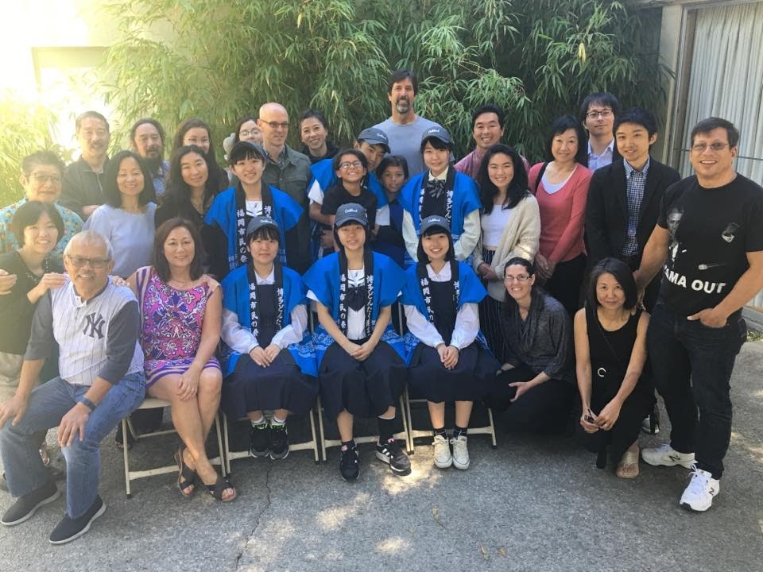
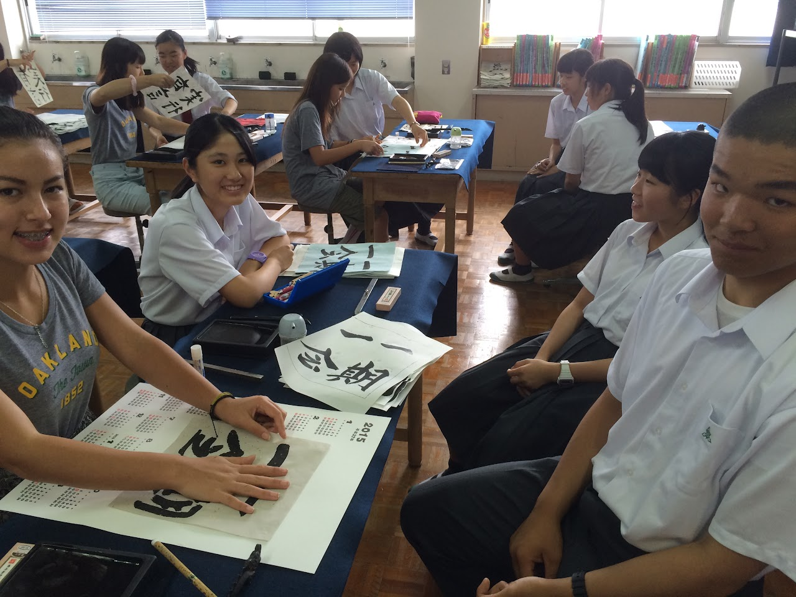
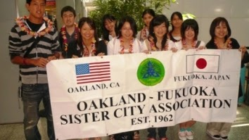

Embedded Files
Now accepting applications for Summer 2027 High School Exchange to Japan AND Summer 2027 APCC Exchange to Japan.


Annual High School Youth Exchange Program
Annual High School Youth Exchange Program
OFSCA's most enduring program is the annual homestay exchange between high school students in each city, which began in 1971. Each year, several high school students from one city will stay in the homes of host families in the other city, with destinations alternating each year. Over 1,000 students have benefitted from this cross-cultural experience, with three generations in some families having participated in these exchanges.
Thank you to our 2026 Host Families and Volunteers for making the 2026 Summer High School Exchange for the 6 students from Fukuoka, Japan memorable! We could not do this without you! If you or someone you know would be open to hosting a student from Japan in 2028 (families must have K-12 aged children at home), please let us know at youthexchange@oakland-fukuoka.org. Information about hosting a student and the application for becoming a host family with OFSCA can be found below.
Summer 2027 High School Exchange - California to Japan
Summer 2027 High School Exchange - California to Japan
The 52nd Annual Oakland-Fukuoka High School Student Exchange Program will take place in Summer 2027 (dates to be announced; typically, late June to early July). OFSCA is proud to send a group of six visiting high school exchange program students from Oakland, California who will take part in educational programs and grassroots exchange in Fukuoka City, Japan, on the island of Kyushuu.
Student Participants for Summer 2027 - The application period is now open.
Student Participants for Summer 2027 - The application period is now open.
52nd Oakland Fukuoka High School Student Exchange Program application [Adobe format] or [Word format]
The annual Oakland Fukuoka High School Student Exchange Program is a 10-12 day Program in Fukuoka, Japan, Oakland’s Sister City. We will be accepting applications for this Program and space will be limited to 6 students.
Eligibility: Students attending high school during the 2026-2027 academic years are eligible. Students living in or attending high school in the City of Oakland are strongly encouraged to apply.
Accepted students and/or their family will be required to join the Oakland Fukuoka Sister City Association (OFSCA) - $10 annual dues for students or $50 for a family.
We strongly encourage each family to homestay a student from Japan the preceding and/or following summer as this is an exchange program. If your family is unable to host a student from Japan in the year after the program participation, please sign up to recruit a local family with K-12 children at home in your stead. This will ensure student exchange programs between our cities will thrive and be available for future participants.
2027 Program Cost: Estimated to be $3,000 which includes (1) airfare from San Francisco, CA to Fukuoka, Japan, (2) room & board in Fukuoka (homestay experience with local families), and (3) organized group activities. Students will be responsible for any personal expenses in Japan (such as purchases, gifts, snacks outside of provided daily meals, etc.).
Student Safety: The Oakland students will be under adult supervision. A representative or representatives from the Oakland Fukuoka Sister City Association will chaperone the students during the trip. The parent(s)/guardian(s) of accepted students and the student will be required to sign a Release Form.
Lodging: The City of Fukuoka, via the Fukuoka City International Foundation (FCIF) in partnership with the Fukuoka Oakland Friendship Association (FOFA), will organize the homestay for each student with a host family and daily activities for the group during their stay in Fukuoka, Japan. The homestay and cultural exchange are the highlights of the program. The student or their family will be required to join the Oakland Fukuoka Sister City Association. We strongly encourage each family to homestay a student from Japan the preceding and/or following summer as this is an exchange program. If your family is unable to host a student from Japan in the year after the program participation, please sign up to recruit a family in your stead. This will ensure student exchange programs between our cities will thrive and be available for students in the future.
Questions: If you have any questions regarding the Program, please email youthexchange@oakland-fukuoka.org or ofsca@oakland-fukuoka.org.
Summer 2028 Host Families
Summer 2028 Host Families
OFSCA will be seeking local host families to host a high school student from Fukuoka during Summer 2028. Contact us: president@oakland-fukuoka.org to learn more. Families with children in middle school or high school are required per Fukuoka rules.
Host Family application form (2028 form will be shared in 2027)
Host Family guidelines
Summer 2026 High School Exchange - Japan to California
Summer 2026 High School Exchange - Japan to California
The 52nd Annual Oakland-Fukuoka High School Student Exchange Program takes place August 14-21, 2026. OFSCA is proud to host a group of six visiting high school exchange program students from Fukuoka, Japan who will take part in educational programs and grassroots exchange with the Oakland community and Oakland High School.
Host Families for August 2026 - The application period is now closed.
Host Families for August 2026 - The application period is now closed.
OFSCA will be seeking local host families to host a high school student from Fukuoka during Summer 2028. Contact us: president@oakland-fukuoka.org to learn more. Families with children in middle school or high school are required per Fukuoka rules.
Host Family application form (2028 form will be shared in 2027)
Host Family guidelines
ARCHIVE: Summer 2025 High School Exchange - California to Japan
ARCHIVE: Summer 2025 High School Exchange - California to Japan

The 51st Annual Oakland-Fukuoka High School Student Exchange Program was a unique opportunity for Oakland and Bay Area high school students to participate in an international homestay experience for 10-12 days in Fukuoka, Japan - Oakland's Sister City.
THE APPLICATION PERIOD IS NOW CLOSED.
FOR REFERENCE ONLY: Files are available to download below (button opens the Google Drive link).
Please check below for opportunities to homestay high school students from Fukuoka, Japan who come to the Bay Area in 2026.
Check back here for any updates on future opportunities.
Questions? Email youthexchange@oakland-fukuoka.org
What past student participants say about OFSCA youth exchange programs to Fukuoka:
"Experiencing a different culture was a great opportunity to learn about the world and to connect to people all over the globe...The program gave me the ability to use my Japanese to communicate with lots of people include my very welcoming Fukuoka host family. Whether going to modern museums with ancient artifacts or a nationally recognized ramen shop to just playing around in the house on a rainy day, (this) is something I will never forget."
"It was super exciting to be a student in Japan."
"A memorable event from my homestay was when I got to walk to school with my 'brother' and 'sister'...The experience allowed me to meet new people. I also got to try new habits and food."
Photo & Video Gallery
Photo & Video Gallery
View our photos and our YouTube video of the program.
THANK YOU TO OUR GENEROUS HIGH SCHOOL EXCHANGE PROGRAM DONORS & PARTNERS
THANK YOU TO OUR GENEROUS HIGH SCHOOL EXCHANGE PROGRAM DONORS & PARTNERS
Kushida Shrine
Nagasaki Peace Park
Our Gold Sponsors Thank You T-shirt was seen in Japan!
We recognize and celebrate the generous individual, corporate or community organization donations. THANK YOU!!
We recognize and celebrate the generous individual, corporate or community organization donations. THANK YOU!!
Gold Sponsors
Matthew Ogawa
The Port of Oakland
Greg, Linda and Brittany Nakamura
Jack London Sponsors
Fatima Alyousifi
Steve & Kirsten Burningham
Crossroads Home Health
Ruby Liang
In honor of Kiyoko and Hiroji Mukasa
Roy Saito
Denice Tsugawa
Thank you to our generous business and community partners that help with restaurant fundraisers, small gifts for Japan, and more!!
Thank you to our generous business and community partners that help with restaurant fundraisers, small gifts for Japan, and more!!
Business & Community Partners
Pizzeria Violetta: https://pizzeria-violetta.com/
Kinder's: https://www.kinders.com/
Reference Historical Application Form Information
Reference Historical Application Form Information

About Student Applications & Participants
About Student Applications & Participants
The 51st Annual High School Student Exchange will be held in early to mid July 2025. To be eligible to participate in the student exchange, you must be either in high school, entering high school in the fall of 2024, or have just graduated in the summer of 2025 in Oakland or the greater Bay Area. Participants will be selected based on the applications, including an essay, letter of recommendation to be completed and sent by a non-family adult, and a short student interview. This is a wonderful opportunity to learn more about the Japanese culture and language, and many students make lifelong friendships. The application form is available above.
For questions about the high school exchange programs, contact youthexchange@oakland-fukuoka.org or join a General Meeting each month.
Thank you to the Summer 2024 CA Homestay Families who hosted High School Exchange - Japan to California (July 26-August 6)!
Thank you to the Summer 2024 CA Homestay Families who hosted High School Exchange - Japan to California (July 26-August 6)!
Join OFSCA as a host family for incoming exchange students in our Youth Exchange program. Become a 2026 Homestay Family welcoming high school students from Fukuoka. For more information, contact ofsca1962@gmail.com or the 2024 program coordinators for OFSCA, Gary Tominaga (gttominaga@comcast.net) or Jason Lambert (tonkatsudog@gmail.com).
Host Families do NOT need to live within the City of Oakland.
Host Families
Host Families
The City of Fukuoka brings students from high schools to learn more about life in the United States every other year. The program focuses on education and community, with special English language classes several mornings. During the afternoons, community tours and activities acquaint the students to life in Oakland and the Bay Area. OFSCA will be looking for host families for all the students. This is also a great opportunity for a local high school student who may want to participate in the next year (to go to Fukuoka) by making a Japanese friend. Students will typically have basic conversational English skills. Families that speak English (and/or Japanese) at home are welcome. If your family speaks a language other than English at home, you are also welcome as long as you will be able to communicate in English (preferred) and/or Japanese with the student.
If you are interested, please download our questionnaire and mail it to OFSCA at ofsca1962@gmail.com.
Join OFSCA as a host family for incoming exchange students in our Youth Exchange program. We need homestay families to join us to host a student during the 2024 Fukuoka group visit (Friday, July 26 through Tuesday, August 6, 2024). For more information, contact ofsca1962@gmail.com or the 2024 program coordinators for OFSCA, Gary Tominaga (gttominaga@comcast.net) or Jason Lambert (tonkatsudog@gmail.com).
Typical host family responsibilities include:
Provide housing for the student during their 10-day stay
Provide breakfast and dinner and potentially pack a "typical" bagged lunch for the student during certain weekdays (notified in advance). Provide all weekend meals.
Arrange to drop-off the student at a designated point in downtown Oakland each weekday morning around 9:00am and pick them up around 5:00pm in the afternoon. The Association understands that the work schedules of many families may prevent them from either dropping them off or picking them up. Therefore, whenever possible, host families are encouraged to form carpools.
All afternoon events will be open to the host families. We welcome host family volunteers to join us on the excursions if available. A farewell party is planned on the final Sunday of the exchange.
Families interested in serving as a host family will need to complete a Host Family Application or contact us at ofsca1962@gmail.com.
Host Family 2024 Frequently Asked Questions
Host Family 2024 Frequently Asked Questions
What kind of home do I have to have? / What if I have kids / have adult children / don't have children / have pets at home?
All kinds of homes are open to becoming host families. Previous host families have lived in single-family homes, apartments, condos, multi-generational homes, etc. in Oakland, CA and nearby towns/cities. You do not need to have a giant house, special facilities, a "picture-perfect" home, etc.
Students must have their own bed (a separate bedroom is not required, but if sharing a bedroom with another member of your family, a child under 18 of the same gender). Please contact us by email if your situation is more complex/nuanced and we can discuss this with you directly - ofsca1962@gmail.com. We welcome diverse family situations and are happy to chat!
Families with children of their own are especially encouraged. Families without children / empty nesters are also welcome.
Families with pets are welcome - some of our exchange students may be animal lovers, while other students may need a host family without pets due to allergies or other situations. Talk to us if you have any concerns!
All host families must pass a background check for the safety of our participants.
Families are requested to be available as a host family for the full duration of the visit (July 26-August 6, 2024). While you may take students on a day trip if desired, we request that you remain reasonably near the SF Bay Area or discuss special circumstances with us. For more complex/nuanced circumstances, please contact us to discuss this directly - ofsca1962@gmail.com.
What do I do with an exchange student? What kind of food / activities / entertainment am I expected to provide? Will this be expensive?!
The first priority for a host family is to provide a warm, welcoming, safe home for our visiting students for the length of their visit. It is exciting and interesting for an exchange student to experience what you may think of as typical daily life in the U.S. - cooking at home together, taking a walk around the neighborhood or city, walking a dog, playing a recreational sport or game, visiting local parks or museums, exploring local shops or restaurants.
There is no fee to be a host family. You will not be paid to be a host family. The financial costs to your family typically limited to the meals and incidentals you must provide the student, your daily transportation, and the cost of any recreational activities you choose to offer to the student -- for full details or more questions, contact us at ofsca1962@gmail.com and we can share with you past host family experiences.
You will receive in advance a profile from your incoming exchange student that shares information about their likes and hobbies. For example, one past exchange student mentioned an interesting in seeing what American colleges are like, so her host family planned a day trip to see UC Berkeley or Stanford University campus. Another student told his host family he loved animals, so they planned a weekend day trip to the Oakland Zoo. Almost all students are excited to visit a mall or shops, especially to find souvenirs to bring home for family and friends before they return to Japan (which is often expected of them, so please offer if possible to take them shopping somewhere -- even stores like Target can be an adventure!).
You can also join in with the other 2024 host families for joint activities - the students from Fukuoka may not already know each other well, so this is a chance for everyone to make friends and share the fun and planning!
While some families may choose to do something such as purchase a ticket for the student to join the family for an amusement park or sports event, other families may prefer to focus on free or low-cost activities. As a general rule, do not ask your student to pay for their own admission to paid activities that you choose, transportation, or pay for food at a restaurant/café, although the student may have some spending money for their own shopping or purchases. Clear communication makes for a positive experience for everyone, and our OFSCA organizers and the Fukuoka chaperones can help with communication if needed.
On weekdays between 9am-5pm (typically), OFSCA volunteers will take charge of your students, taking them on day trips around Oakland and the San Francisco Bay Area. Students will participate in cultural exchange activities, visit local sites (a complete schedule is provided to all host families), and learn about our city and culture. Host family members are sometimes welcome to join these programs if interested and available.
You do not need to spend a lot of money to make an exchange student's trip a worthwhile experience. Your financial responsibility is simply to provide the student with the required number of meals per day (and any snacks or beverages), give them a clean and safe place to stay, and make them feel welcome in the United States.
Do I have to speak Japanese?
You do not have to speak Japanese language to have a Japanese high school exchange student. As long as you are willing to communicate in basic English and help the student feel welcome and try to understand (or contact us or the students' chaperones for assistance if needed), you are welcome to apply as a host family!
What do the Japanese exchange students eat? How often do I have to feed them?
The Japanese exchange students understand that at your home, they may be trying new and unfamiliar foods and experiencing cultural exchange through meals. Students can eat what your family eats whether that is food from your own cultural backgrounds, typical "American family" lunch or dinner, etc. You will receive a student profile for your host student that includes any dietary information you might need to know such as food allergies but typically most students are able to eat most foods. (Please remember that the high school students are teenagers, and perhaps offer snacks outside of meal time if appropriate or encourage them to let you know if they are hungry.)
Host families must feed the students breakfast and dinner on all weekdays, and may occasionally be asked to provide a bagged lunch for certain excusion days. For weekends, host families must feed the students breakfast, lunch, and dinner. A joint farewell party with a meal is hosted by OFSCA on the final day of the exchange.
If your family follows a special diet (vegetarian, vegan, etc.) this is usually not a problem. If you have other concerns (for example: keeping kosher or other religious dietary practices at home, not eating meat or animal products at home, wondering about meals because you usually eat takeout or prepared meals, etc.) , or if you have concerns or questions, please contact us at ofsca1962@gmail.com and we are happy to chat with you!
What if someone gets sick or we have some kind of family emergency?
Our OFSCA host families receive detailed information on unexpected circumstances, and we will discuss this with families and ensure that you have emergency contacts for OFSCA organizers and the student chaperones. If you have specific questions, please contact us at ofsca1962@gmail.com
Page updated
Report abuse